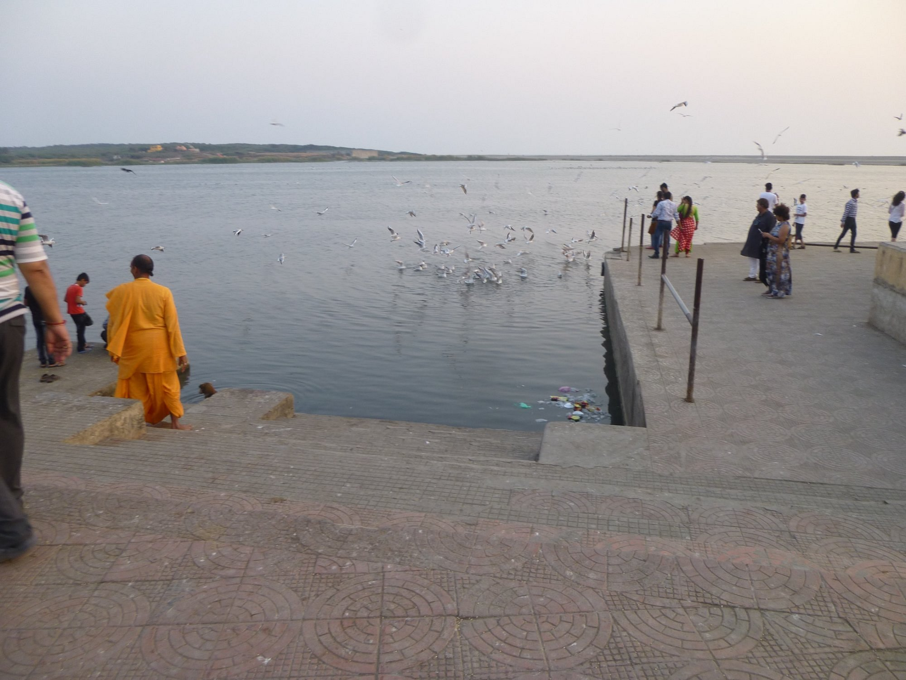
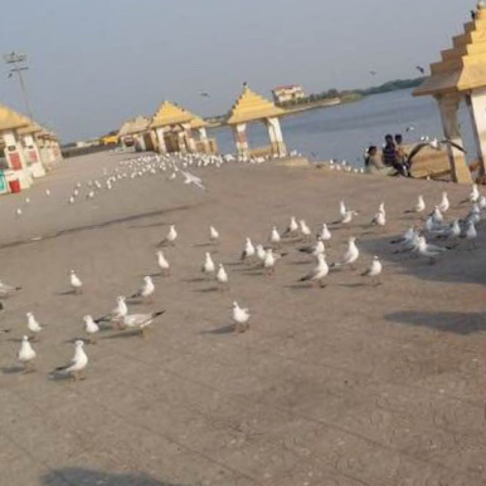
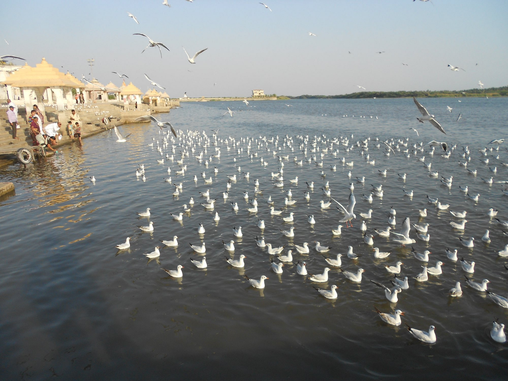
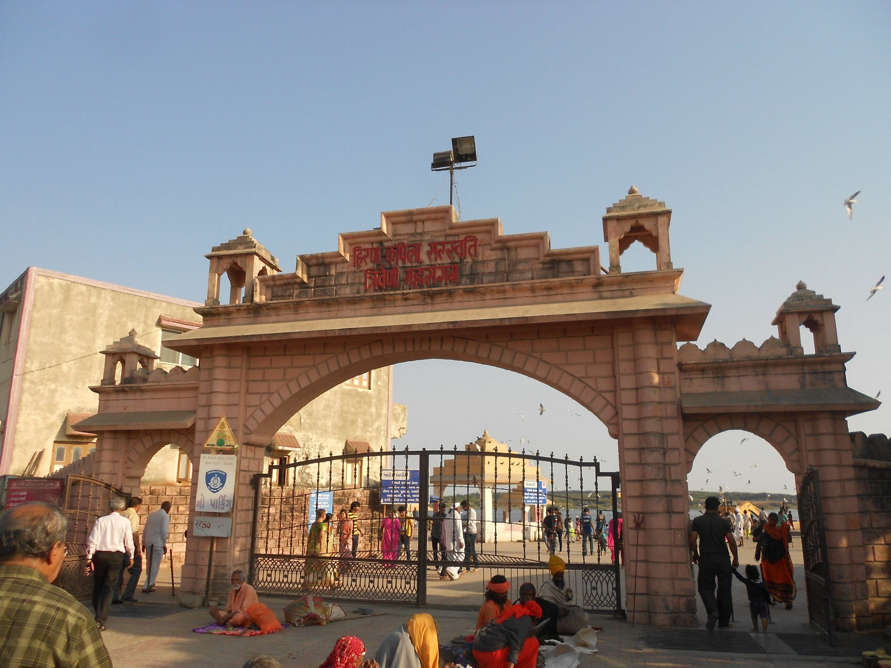

@Triveni Sangam





About Triveni Sangam :
Refurbished into a corniche-style area for visitors, the Triveni Sangam marks the confluence of rivers Hiran, Kapila and the Saraswati, where they meet the Arabian Sea on the west coast. Triveni Sangam is said to be a place where Hindus can attain moksha or release from the cycle of life and death. One can see a number of people praying or just experiencing the spiritual atmosphere sitting by the stairs. The fervour is often upstaged by hundreds of gulls that flock at the stepped ghats.
The significance of the Triveni Sangam dates back to thousands of years ago when the rivers Hiran, Kapila and the Saraswati met here.
The best time to visit is between the cooler months of November to February; festive occasions like the Kumbh Mela that is hosted once in twelve years or the Magh Mela in January.
How to Reach :

BY BUS :
temple is near from veraval.The temple city lies 82 km from Junagadh, 270 km from Bhavnagar and 120 km from Porbandar.